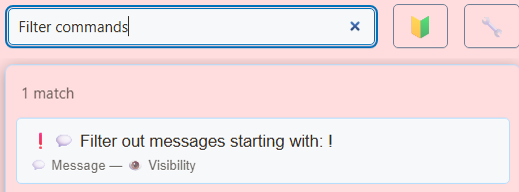

1. Choose where to filter
Open SSN’s popup or desktop Allikad ja sätted. Use menu search to find the exact labels below.
- Incoming chat Captured source messages
- Global settings Filter before distribution
- Individual pages Each page applies its own URL options
| Where | Effect |
|---|---|
| Global settings and tools → Message - Visibility | Drops or changes captured messages for downstream SSN outputs. Use when something should not reach any output. |
| Streaming Chat Dock link options | Changes that generated Dock URL. Other open Docks and overlays keep their own options. |
| Native platform moderation | Controls the original platform chat. Hiding someone inside SSN does not establish a native platform ban. |
2. Block or restore a user
- For a message already in the Dock, right-click and open User Actions → Block User. This removes that user’s messages and adds them to the SSN hide-user list.
- For a prepared list, find Blocked users under global Message - Visibility. Enable its switch and enter comma-separated usernames.
- To unblock, remove the username from that list. Test with a new message; previously removed rows do not automatically return.
Use the platform’s own moderation tools when you need to ban or time out someone on the source platform. SSN’s visibility and role lists are not a substitute for platform permissions.
To keep messages visible after the Dock receives a deletion, add &showdeleted to that Dock’s URL. Deleted messages stay readable with a Deleted label and dimmed text. For example: dock.html?session=YOUR_SESSION_ID&showdeleted. Use this on your personal Dock; a separate OBS Dock without the option uses the existing behavior of removing deleted messages. This cannot show messages that were blocked before SSN captured them.
3. Filter words and commands
For global profanity handling, search for Censor või Block messages that contain swear words. Censoring replaces matched text; blocking removes the whole message. Choose the behavior you want before testing.


For a custom Dock-only phrase list, find Contains text or name in the Streaming Chat Dock options. Turn it on, enter a word or phrase, and select Lisa. Matching is case-insensitive and checks both message text and the chatter’s name. A short fragment can match inside a longer word. If blur mode is enabled, matches can be blurred instead of removed.
Copy the updated Dock link and replace the URL wherever that Dock is open. For command clutter, the Dock supports &hidecommands. For example:
dock.html?session=YOUR_SESSION_ID&hidecommands&blockedwords=spoiler
This example changes a Dock’s presentation. It does not disable commands in Points, Waitlist, or Event Flow.
4. Handle bots and trusted links
Under global Message - Visibility → Assign roles/classes to certain users, use Identify by name who are bots. Enter, for example, moobot:twitch,nightbot:twitch. A platform suffix limits classification to that source type.
Then choose a global bot-hiding option if no output needs those messages, or add &hidebots to a Dock URL to hide them only there. To replace ordinary links while allowing bot links, use:
dock.html?session=YOUR_SESSION_ID&striplinks&allowbotlinks
The bot must be identified first. Assigning an SSN role does not grant privileges on Twitch or another platform. See the role controls reference.
5. Verify the boundary
Open one unfiltered Dock and one filtered Dock on the same session. Send fictional testsõnumid: a normal line, a blocked phrase, a command, and a bot message. Local filters should affect only the configured page; global filters should affect downstream outputs. Test manual and automatic featuring separately.
If too much disappears, turn off the last filter you added, check the blocked-user list, and check donation/member/queue-only toolbar modes. Old OBS URLs retain old options. For a reviewed-message workflow, see Using the Dock.